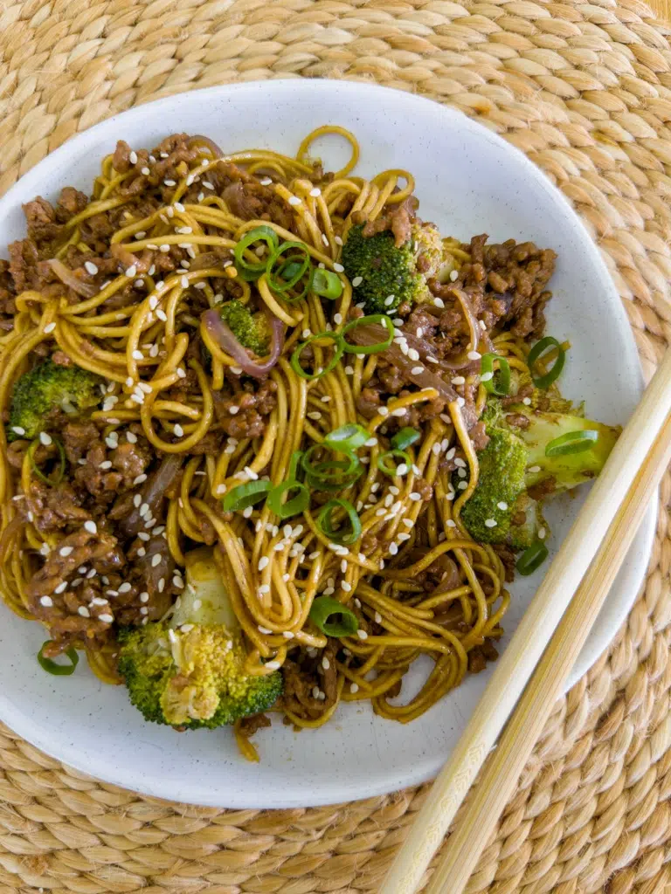

Beef and Brocoli Noodles

Quick and easy mid-week meal.
I love using beef mince/ground beef in my recipes. It’s a low-cost option, the kids happily eat it and it’s so incredibly quick and easy to prepare. This dinner is effortless with the noodles all being cooked in the one pan (because some nights even waiting for water to boil isn’t an option) and it’s a great “catch-all” meal where you can use up whatever veg you have in the fridge.
Two big handfuls of vegetables are required for this recipe; some great options are bean sprouts, shredded cabbage, carrot, mushrooms, bok choy or baby corn. Aside from being easy, this sauce is outrageously delicious. The hoisin sauce makes it sweet and sticky with a great depth of flavour and if that’s not all wonderful enough, you can have this delicious family dinner on the table in less than 20 minutes!
Ingredients
Sauce
- 1 tbsp dark soy sauce
- 1/4 cup hoisin sauce
- 1 tbsp mirin
Stir Fry
- 1 tbsp unsalted butter
- 1 tbsp garlic, freshly minced
- 1/2 cup chicken stock
- 300 ml thickened/heavy cream
- 1 tsp Dijon mustard
- 1/2 cup Parmesan cheese
- Salt and pepper, to taste
Instructions
- Sprinkle the chicken with salt, pepper, sweet paprika, onion powder and thyme. Press the chicken into the flour so that all sides are evenly coated.
- Heat the olive oil and 1 tablespoon of butter in a large, deep frying pan over medium-high heat. Add the chicken and cook for 5-6 minutes, or until the chicken is just cooked, turning once halfway through.
- Remove the chicken from the pan and set it aside on a plate.
- To the same pan, add the butter for the sauce. Once melted, add the garlic, stirring for 30 seconds.
- Add the chicken stock and cook for 1-2 minutes until it has evaporated by at least half. Stir in the thickened cream and Dijon mustard, reduce the heat to medium, and simmer for 2 minutes until the sauce has thickened slightly.
- Stir through the Parmesan cheese, season to taste, and return the chicken to the pan for 2-3 minutes or until the chicken is heated through. Serve the chicken with rice, mashed potatoes or pasta and a side of steamed greens. Top with freshly chopped parsley and a squeeze of lemon juice.